从一次参数调整，到一个可运行的模型。
通过手写数字案例，理解训练模式、张量、泛化、架构、框架以及模型的保存与部署。
理解批次与轮次、泛化与遗忘，并连接网络设计、训练框架和模型部署。
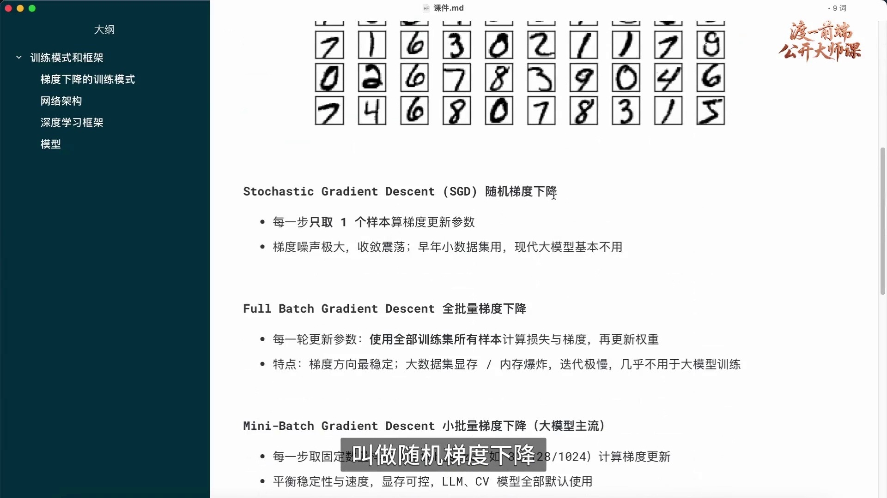
前面已经介绍了如何根据一次前向与反向传播得到参数梯度。接下来需要决定：每次更新使用多少条数据？按这个口径，可以区分单样本随机梯度下降、全批量梯度下降与小批量梯度下降。
单样本随机梯度下降每次随机选取一条样本，计算预测、损失和梯度，随后立即更新参数，再处理下一条样本。它每次更新的计算量较小，但单条数据产生的梯度不一定接近整个训练集的平均梯度。
山坡类比可以帮助理解这一点：不同样本定义各自的损失函数。沿着样本 A 的下降方向走一步，可能使样本 B 的损失增大。连续用不同样本更新时，方向会发生波动，这就是梯度估计中的噪声。
不过整个训练集的平均目标并没有因此不断被重新定义。变化的是用于估计这个目标梯度的样本。随机性也不完全是缺点，单样本及小批量方法都可以有效优化；不能仅因存在震荡便认定方法无效或已经过时。
这里把 SGD 狭义地用于每次一个样本的情况。实际文献和框架中，SGD 也常泛指使用小批量梯度的随机优化方式，阅读时需要结合 batch size 判断。
课件按每次更新使用的样本数列出三种方式。单样本梯度通常波动较大，但实际训练表现还与学习率、数据顺序和优化设置有关。
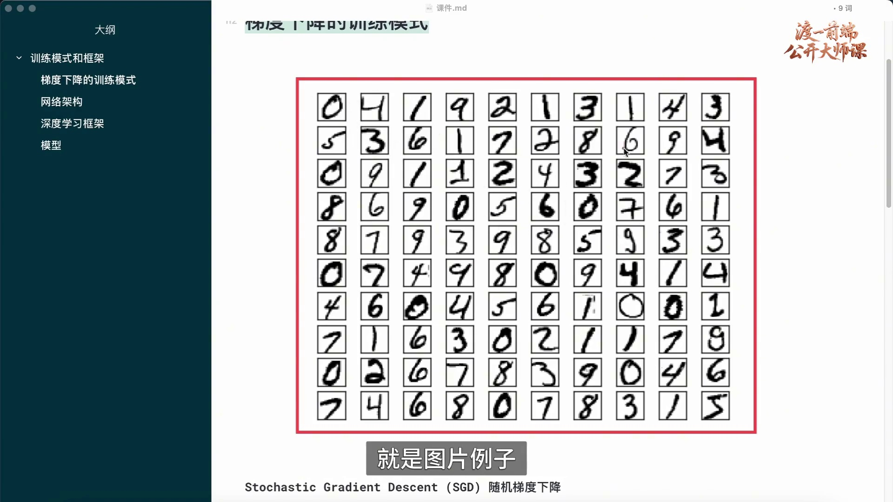
以手写数字识别为例，训练集需要包含不同书写方式的数字图片，以及与图片对应的正确标签。只见过一种写法的模型，很难可靠处理笔画、粗细、位置都发生变化的输入。
数据质量包括标签是否正确、样本是否覆盖目标使用场景、不同类别是否得到适当代表，以及数据处理是否一致。数量很多不等于质量足够好；重复、错误或与任务不相关的数据也可能影响学习。
准备数据时还应区分训练、验证和测试用途。训练数据用于更新参数，验证数据用于选择设置，独立测试数据用于评估最终效果。这样才能判断模型是否学到了能够迁移到未见样本的规律。
每条数据都可以通过前向传播产生预测，通过损失和反向传播产生梯度。三种训练模式的区别，主要在于怎样汇总这些梯度，以及何时更新参数。
数字网格包含多种手写样式，整体框选表示把这些样本作为一个数据集合考虑。仅凭截图不能确认具体数据库版本，因此不据此推断其名称、精确规模或来源作者。
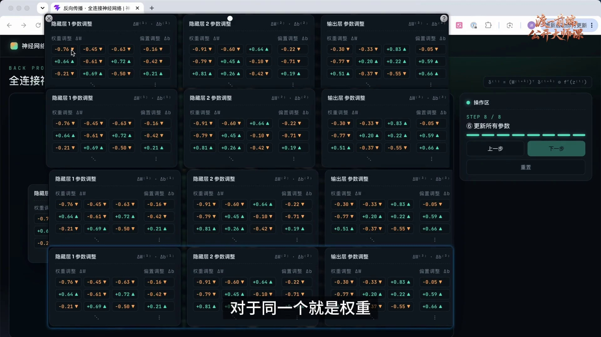
设训练集有 N 条样本，整体目标为 J(θ)=(1/N)ΣᵢLᵢ(θ)。全批量梯度下降使用整个训练集计算这个平均损失的梯度，再执行一次参数更新。
可以先按顺序理解：固定当前参数，计算第一条样本的梯度并保存；继续计算第二条、第三条，直到全部样本处理完成。过程中不更新参数，最后将同一个参数对应的各样本梯度求平均。
对于某个权重，一部分样本的梯度可能要求它增加，另一部分则要求它减少。汇总后的梯度综合了所有样本的影响。普通梯度下降使用 θ新=θ旧−η(1/N)Σᵢ∇Lᵢ(θ旧)，各项必须在同一个参数状态下计算。
更新完成后，再用新参数计算整个训练集的梯度，重复这个过程。实现上可以分块累积梯度，不必把全部数据同时放入显存；但每次更新前仍需要处理整个训练集，因此大数据集的更新成本较高。
是否训练完成，需要结合损失与独立数据上的效果。例如 98% 准确率是否足够取决于任务要求；若只有 60% 且进展停滞，应检查数据、实现、学习率、优化和网络容量，不能直接归因于层数。这里的百分比是判断情境的示例，不是通用合格线。
多组参数面板用来表示不同样本对同一组参数的影响。应先汇总梯度，再按统一优化规则更新；图中面板只是说明结构，并非完整训练日志。
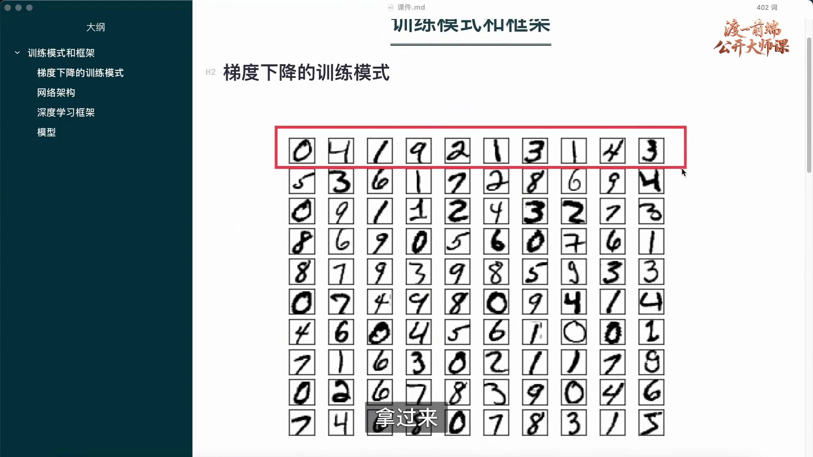
全批量梯度消除了由随机抽样引入的梯度估计噪声，但不意味着它在所有任务中都最理想。大型数据集上，一次更新需要遍历全部数据，计算和等待成本较高。
小批量方法每次选择 B 条样本，计算这批数据的平均梯度并更新参数，然后处理下一批。它在更新频率、梯度波动和硬件利用率之间提供了可调的折中。
例如 batch size 可以是 32、128 或 1024，但这些数只是候选设置，不是固定标准。实际选择取决于模型、样本大小、可用显存、并行方式和优化效果，批次越大也不保证训练越好。
为便于理解，可以将批内计算解释为逐条计算后求平均；实际通常把多条样本组合成张量，通过批量算子执行。对于可按样本分解的损失，两种表达描述的是同一平均目标；若模型包含批内交互运算，还需要考虑这些运算的具体定义。
网格中被圈出的一部分样本构成一个小批次。完成这个批次的梯度计算并更新后，再进入下一批，而不是等所有样本都处理完才更新。
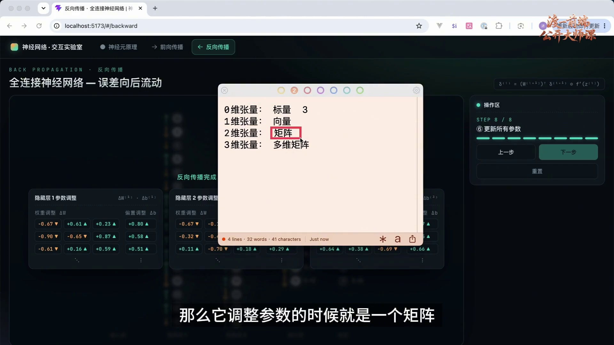
在深度学习计算中，可以把张量理解为按多个轴组织的数值数组。零维张量是标量，例如 3；一维张量是向量；二维张量是矩阵；三维及更高维张量则具有更多索引轴。
这里的“维”指数组的轴数。一个包含 1600 个元素的输入向量，在数学上属于 1600 维向量空间，但存储时可以是一维张量。不能把向量元素数量与张量轴数混为一谈。
将 B 个长度为 1600 的样本放在一起，可以组成形状为 (B,1600) 的输入张量。图像也可以保留通道和空间轴，例如 (B,C,H,W)，其中 B 是批次大小、C 是通道数、H 和 W 是高与宽。
参数、激活值和梯度同样可以用张量组织。批量矩阵乘法、逐元素运算和归约求平均等操作具有明确的形状规则，框架可将它们交给 GPU 高效执行。张量表示方便并行，但并不意味着所有样本和所有层都在同一时刻完成计算。
便签从标量、向量、矩阵扩展到高阶数组。三维张量不是二维矩阵的另一个名称，而是具有三个轴的数据结构；具体含义取决于每个轴的约定。
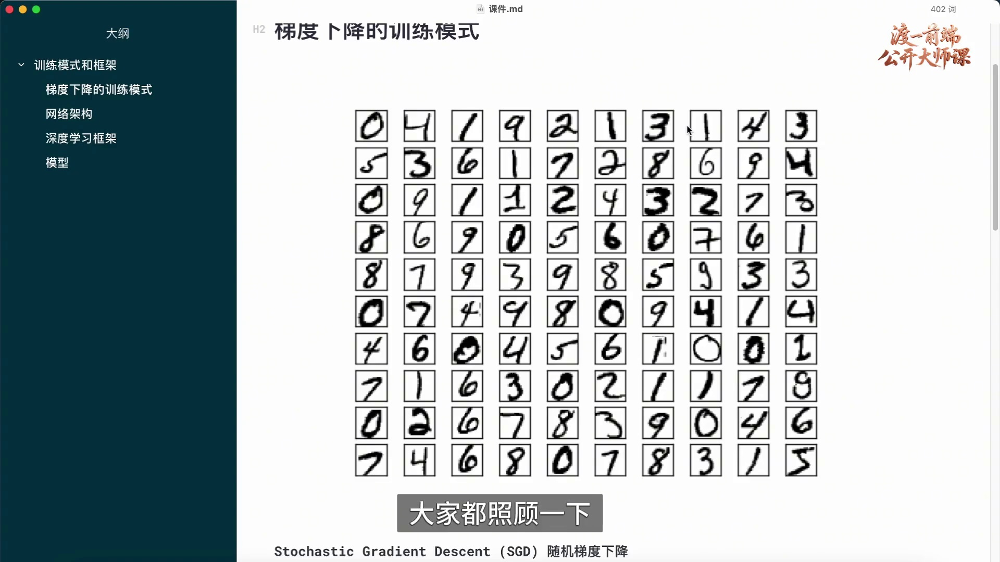
小批量训练依次处理各批数据，每批完成后更新一次参数。遍历训练集一轮称为一个 epoch；如果一轮含多个批次，就会发生多次参数更新。之后可以重新打乱数据，再开始下一轮。
对于 N 条样本、批次大小 B，若保留最后不足 B 条的批次，一轮通常有 ⌈N/B⌉ 次更新；若丢弃最后不足的批次，则需要按相应规则计数。训练设置应明确这一细节。
平均损失可以直观地理解为综合不同样本的诉求，但它不是保证每条数据都得到相同程度的改善。一个方向可能改善多数样本，也可能暂时损害少数样本，因此还应检查类别表现和实际任务指标。
训练的目标是获得符合用途的预测能力与泛化表现，而不是要求模型完美复现人类思维。网络单元是数学计算结构，生物神经元只是部分设计灵感，不能把两者当作一一对应的完整复制。
训练轮数、批次大小和学习率都是需要选择的设置。停止训练时应综合验证表现、计算预算和收敛情况，而不能只凭某一条训练样本已经预测正确。
多种手写数字混合排列，说明一个批次可以包含不同类别。平均梯度综合样本贡献，但不等于对每个样本都保证相同收益。
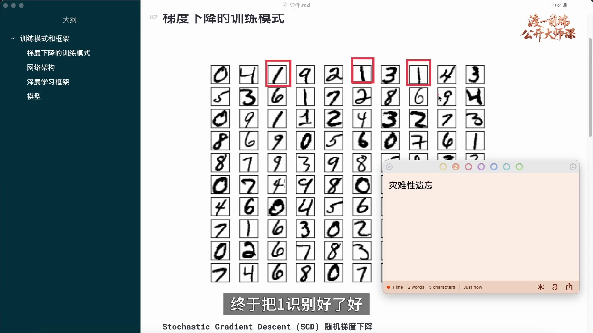
如果先长期只训练数字 0，再长期只训练数字 1，参数会不断适应最近的数据分布。模型可能在新类别上进步，同时损害先前已经学到的类别能力。
在连续学习不同任务或数据分布时，旧能力出现严重下降，称为灾难性遗忘。先学 0、后学 1 是一个直观示例，但不是说每次普通的单样本更新都会发生灾难性遗忘，也不是说按类别排列一次就必然产生同样程度的问题。
在固定数据集的常规训练中，随机打乱样本有助于减少顺序偏差，让连续批次更充分地覆盖不同数据。必要时还可以采用分层采样或其他采样策略，避免长期只看到单一类别。
不过，打乱只能重新排列已有数据。如果后续训练已经没有旧任务数据，单纯打乱新数据无法保证保留旧能力；持续学习还可能需要数据回放、正则化等专门方法。微调模型时也应检查新增能力与原有能力之间的变化。
数字 1 被单独圈出，用来说明连续集中于某一类别的情形。“灾难性遗忘”应限定为旧知识显著受损的现象，不能与一般梯度波动混用。
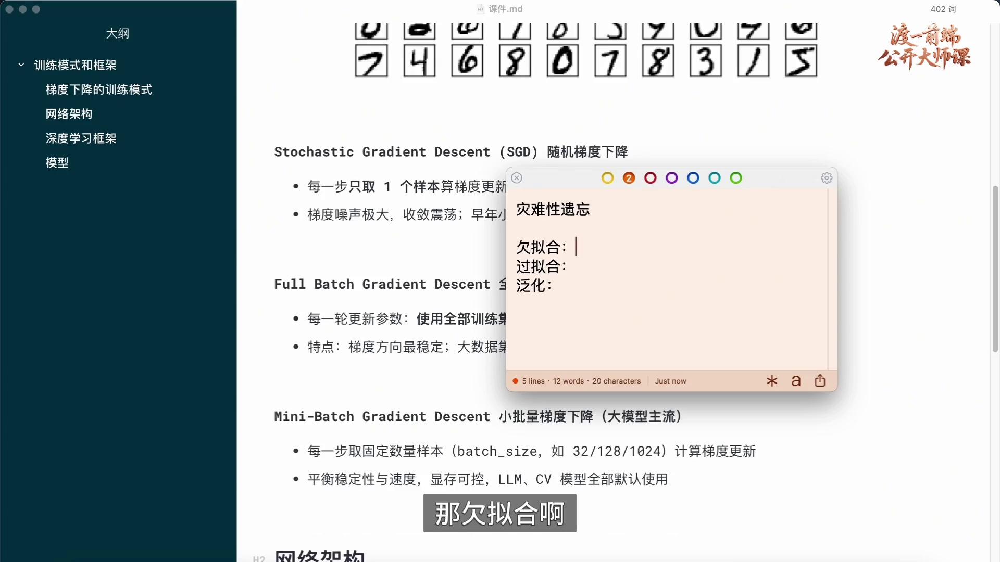
泛化能力指模型在未用于训练、但与目标任务相关的新数据上的表现。对于手写数字识别，一张没有出现在训练集中的图片仍能被正确分类，是一个泛化实例；可靠评估需要足够多的独立样本。
过拟合表现为模型过度适应训练数据中的细节或噪声，训练表现很好，验证或测试表现却明显较差。它不要求模型严格“只认识训练集”，而是强调训练表现与未见数据表现之间的不良差距。
欠拟合则是模型尚未充分拟合数据中的规律，通常连训练表现也不理想。原因可能包括容量不足、特征不合适、训练不充分或优化设置不佳，需要结合训练曲线诊断。
增加层数或单元数量会改变模型容量，但不能简单地说层多必然过拟合、层少必然欠拟合。数据规模、正则化、结构、优化与训练时长都起作用。可以通过改进数据、调整容量、使用正则化或早停等方式改善，但应依据验证结果选择。
便签列出泛化、过拟合和欠拟合。应结合训练与验证表现理解这些术语，不能仅根据隐藏层数量给模型贴标签。
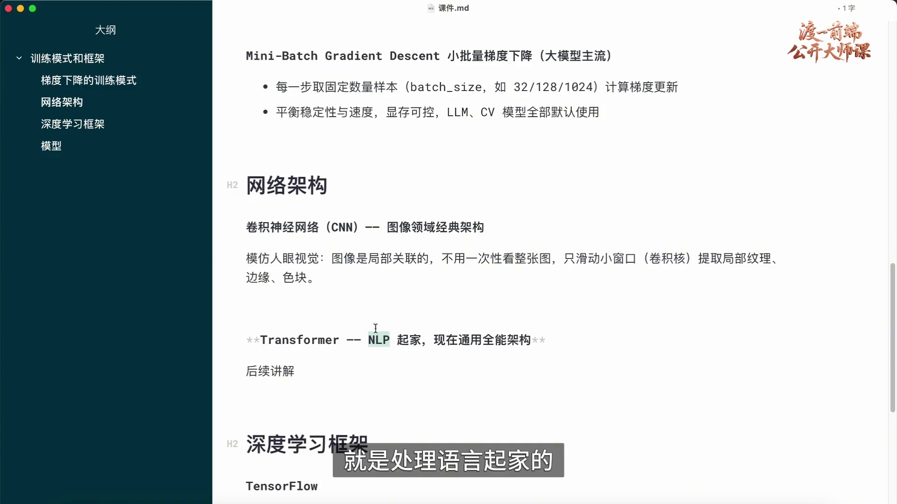
网络架构规定计算结构：有哪些层、每层多宽、采用何种连接与运算，以及数据如何在各模块之间流动。前面使用的全连接网络只是其中一种结构。
卷积神经网络（CNN）使用卷积核在局部区域上重复应用共享参数，适合提取局部模式，例如边缘、纹理和色块。随着层次组合，网络也能形成更大范围的表示，并不是永远只看局部、无法整合整幅图像。CNN 仍然是有价值的架构，不能仅因出现新结构就称其失效。
Transformer 最初在机器翻译研究中提出，依靠注意力等模块处理信息之间的关系，后来扩展到图像、音频、视频及多模态任务。它用途广泛，但不是对所有任务都最合适的通用答案。
架构可以比作图纸，深度学习框架则提供把图纸实现为代码的工具。框架包含张量运算、自动微分、网络模块和优化等能力；同一种架构可以用不同框架实现，同一个框架也支持多种架构。
课件并列展示 CNN 与 Transformer。图中“通用全能”应理解为用途广泛的概括，不能作为任何任务都优于其他结构的结论。
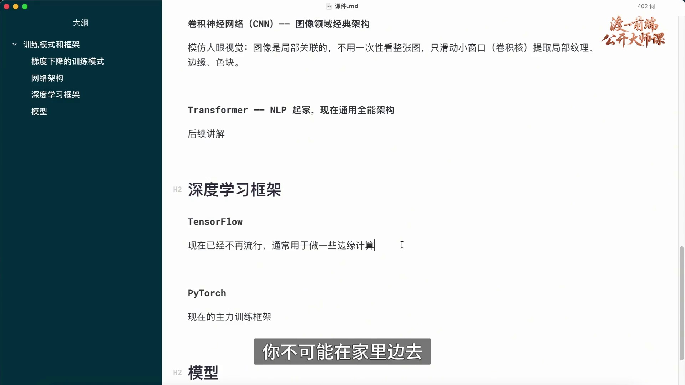
TensorFlow 与 PyTorch 都是用于构建和运行机器学习模型的框架，支持模型训练与推理。选择框架时，需要考虑项目生态、硬件支持、部署方式和团队经验，而不能仅根据一句流行程度判断能力边界。
训练大型模型通常需要大量计算资源，云端或数据中心便于集中管理硬件。但计算发生在哪里取决于模型规模和任务需求，小模型也可以在本地设备上训练或运行。
边缘计算指在接近数据产生位置的设备上执行计算，例如手机、摄像头或嵌入式设备。端侧推理可以减少网络依赖并降低部分场景的延迟；端侧训练则受到设备资源等条件限制，不是所有模型都适合。
TensorFlow 生态提供端侧部署相关工具，其他生态也有相应方案。不能把 TensorFlow 简化为只用于边缘计算，也不能把 PyTorch 限定为只负责云端训练。
图中对两个框架的分工是简化介绍。二者都具备训练与推理能力；边缘计算描述部署位置，不是某个框架专有的任务类别。
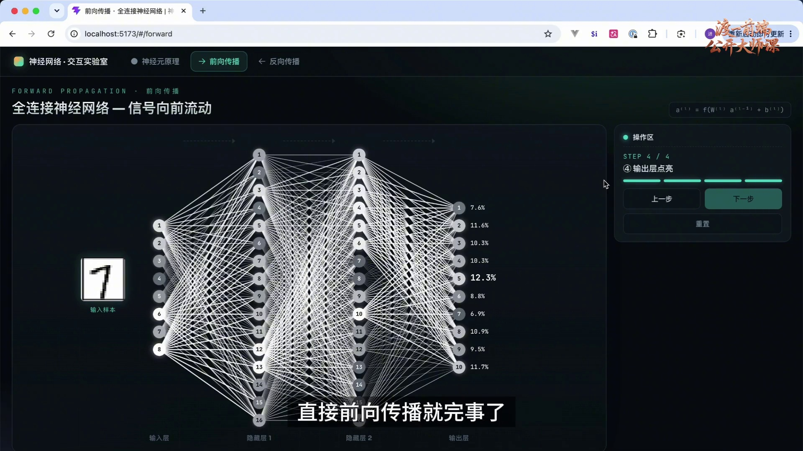
训练阶段通过数据和优化算法调整参数；推理阶段则使用已经确定的参数处理新输入，产生预测。本例数字分类的推理核心，就是执行一次前向传播并解释输出。
模型使用时仍需要与训练约定一致的预处理与输出映射。例如将图片处理成对应尺寸与数值范围，再把输出位置映射回数字类别。仅加载参数而忽略这些约定，可能产生错误结果。
PyTorch 等框架既支持训练，也支持推理。以 PyTorch 为例，模型评估模式与关闭梯度记录是不同设置：eval() 改变 Dropout、BatchNorm 等模块的行为；no_grad() 或 inference_mode() 用于控制梯度记录和相关开销，不能用其中一个代替另一个的作用。
并非所有任务都只需一次前向计算。例如自回归文本生成通常重复计算来逐步生成 token。这里“一次前向传播”的描述，限定于示例中的单次分类预测。
网络对手写数字 1 进行前向计算，说明固定参数后的分类使用过程。图示没有展示生成式任务的多步解码，也没有要求推理时继续更新参数。
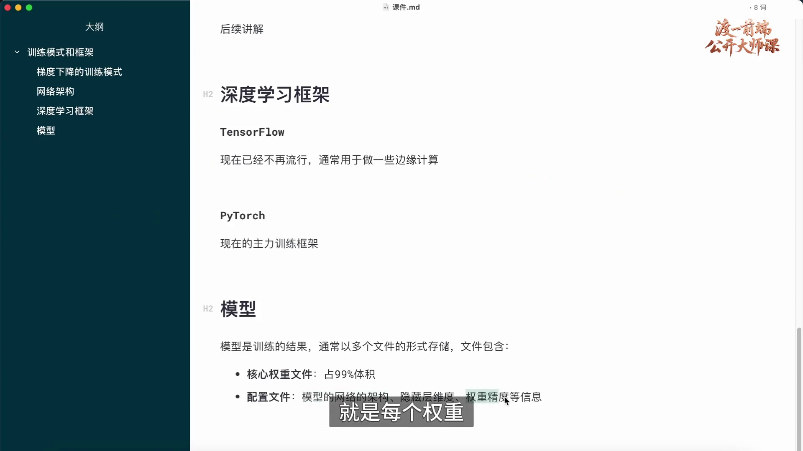
训练得到的参数通常需要保存，以便后续重新加载和使用。模型不只是一个文件名称：运行时需要计算结构、参数以及与任务相关的输入输出约定；发布时可以将这些内容组织成一个或多个文件。
权重文件常保存权重与偏置，也可能包含运行所需的非参数状态。例如 PyTorch 的 state_dict 可以包含参数和持久缓冲区。若要恢复训练，检查点还可能需要优化器状态、训练进度等信息，不能把所有文件都理解为仅有权重。
架构配置说明怎样构建网络，例如层数、隐藏维度和模块类型；数值类型与精度影响存储和计算。对于文本模型，还常需要分词器配置与词表。不同发布格式也可能将结构一并保存，而不是全部依赖独立配置文件。
模型体积与参数数量、每个数值的表示精度和附加状态有关。大型模型的权重往往占主要空间，但没有普遍成立的“固定占 99%”规则，也不能用未经指定版本的“几万亿参数”概括所有模型。
本地使用通常包括构建或加载结构、读取参数、准备输入、切换合适的运行模式并执行推理。生产部署还需考虑吞吐量、延迟、显存、量化、服务并发和运行监测等需求；是否采用专用推理引擎或其他优化，应由具体负载决定。
至此，单个神经元、前向传播、损失与优化、批量训练及模型使用形成了完整流程。这些概念为理解更复杂的架构和开发模型应用提供基础。
权重与配置共同支持模型恢复，但文件组织方式取决于框架和格式。截图中的体积占比是粗略描述，应以实际文件和统计口径为准。